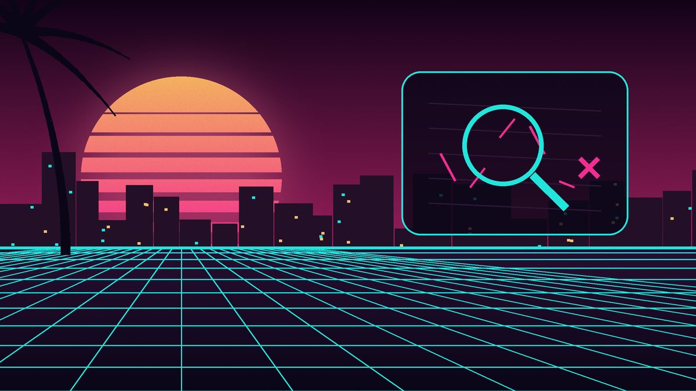

El ovni de GTA 6: déjate abducir en Kelly County y acabarás sacando a un alienígena de una base secreta
Empieza de madrugada, con un coche abandonado y una mujer flotando en un haz de luz al este de Port Gellhorn. Sigue con tres días de partida perdidos y un sueño con un código. Y termina en una base militar con un alienígena metido en una cápsula. Este es el camino entero, con lo que coincide en cuatro guías y lo que no.
Por Redacción Golpe Diario · Publicado el

Qué ha pasado
Dónde y cuándo. GameRant sitúa el encuentro en la parte este de Port Gellhorn, en Kelly County, y dice que hay que ir de noche, sobre las dos de la madrugada. Beebom lo coloca en la misma zona, cerca del refugio del Starlet Motel, y añade un requisito: tener desbloqueado el capítulo 2. games.gg pide ir solo, de noche y pasadas las dos. Hay una pega: la guía de Dexerto habla de las dos de la tarde y es la única de las cuatro que lo dice, así que ve de madrugada.
El primer encuentro, paso a paso. Busca un coche parado junto a la carretera con las luces parpadeando y las puertas abiertas. GameRant avisa de que, si no está, te alejes y vuelvas al rato. Del coche sale un rastro de ropa que lleva al campo y, al fondo, verás a una mujer flotando con un ovni justo encima. Acércate y habla con ella: cuando se calma te pide que le lleves su coche. Al volver a por el coche te abducen a ti.
Lo que pasa después. Despiertas tres días más tarde, en tiempo del juego, y te llama el otro protagonista preguntando dónde te habías metido. En las guías cambia el nombre según con quién jugaran: games.gg cuenta que juegas con Lucia y que Jason lleva tres días sin saber de ella, GameRant habla de una llamada de Jason y Beebom, de una de Lucia. Según GameRant, la ausencia no castiga la relación entre los dos. Y Beebom añade que el encuentro desbloquea el trofeo de bronce «The Truth is Out There».
El sueño, que es la llave de todo. Después de la abducción, haz cosas y vete a dormir: GameRant explica que hay una posibilidad aleatoria de despertar en una habitación blanca. Dentro hay varias salas. En la de los huevos, quédate agachado y pégate a la izquierda sin acercarte a ellos. Luego interactúa con la esfera del centro de la maqueta del sistema solar, que es la que te enseña dónde está la base secreta, según Dexerto. En el panel hay que pulsar los botones en este orden, dice GameRant: 4, 3, 4, 3 y 1, hasta que todas las luces se queden azules. Y queda un recado raro: coger la botella de leche de la sala de la vaca y meterla en la máquina de la sala de la derecha.
El código. Dexerto da el número directamente, el 2314, y GameRant explica de dónde sale: encima del teclado hay unas líneas y se cuentan para sacar la secuencia. Si en tu partida no te cuadra con el 2314, cuéntalas tú. Es el mismo código que te va a pedir la base y, sin pasar antes por el sueño, no hay manera de entrar.
La base. GameRant la sitúa al sur de Hamlet y Dexerto, en Mariana County, y las dos hablan del sitio que has visto en el sueño. Se entra reventando la verja de delante con el coche. Tira a la derecha, rompe las puertas dobles y baja las escaleras hasta el teclado. Dentro se repiten el código y la secuencia de botones del sueño, y luego toca sacar al alienígena de su cápsula: al abrirla suelta gas, así que hay que salir corriendo al ascensor.
El premio. Según GameRant, cuando sales el alienígena se marcha en su nave y te deja una mejora permanente de salud, resistencia y Focus. Esa misma guía cuenta el remate: el ovni vuelve, se lleva por delante a los soldados que te persiguen, manda un gracias en código morse y se va.
Qué significa para ti
- Ve de madrugada, solo y con el capítulo 2 ya empezado: son las condiciones en las que coinciden las guías.
- Lo primero que buscas no es el ovni, es un coche parado con las luces puestas. Si no aparece, aléjate y vuelve.
- Déjate abducir. Perder tres días de partida es justo lo que abre el sueño y, con él, la base.
- El sueño es aleatorio: si al dormir no sale, sigue jugando y vuelve a la cama más tarde.
- Apunta el código del teclado, el 2314 según Dexerto, y si no te cuadra cuenta las líneas que hay encima.
- La mejora de salud, resistencia y Focus es permanente, así que te interesa tenerla antes de meterte en los golpes gordos.
Lo tienes también en la guía: Secretos y easter eggs de GTA 6: dónde están y cómo llegar · Trucos y consejos para el modo historia de GTA 6
Contrastado con: GameRant · GameRant (la base) · Beebom · games.gg · Dexerto
Sigue leyendo
Rockstar mapeó toda la red de suministro de las pandillas de Leonida, aunque solo veas trozos sueltos
Un director de diseño de Rockstar ha contado a IGN que el reparto de droga entre las bandas de GTA 6 está pensado de principio a fin, aunque el juego solo deje ver fragmentos de esa cadena.
El mapa de fans que señala todos los coleccionables de GTA 6 (y por qué conviene usarlo con cuidado)
La comunidad de GTABase ha montado un mapa interactivo con cada coleccionable y punto de interés de Leonida. Es muy útil para el 100 %, pero también enseña cosas que todavía no has vivido en la historia.
El Joker de Florida amenazó con demandar a Rockstar, y ahora está en los créditos de GTA 6
Lawrence Sullivan, el internauta viral por su ficha policial de 2017, llegó a pedir 10 millones de dólares a Rockstar por un plano del tráiler. Hoy aparece acreditado como voz de la población de Leonida, y los mismos créditos nombran también a los empleados que la compañía despidió.